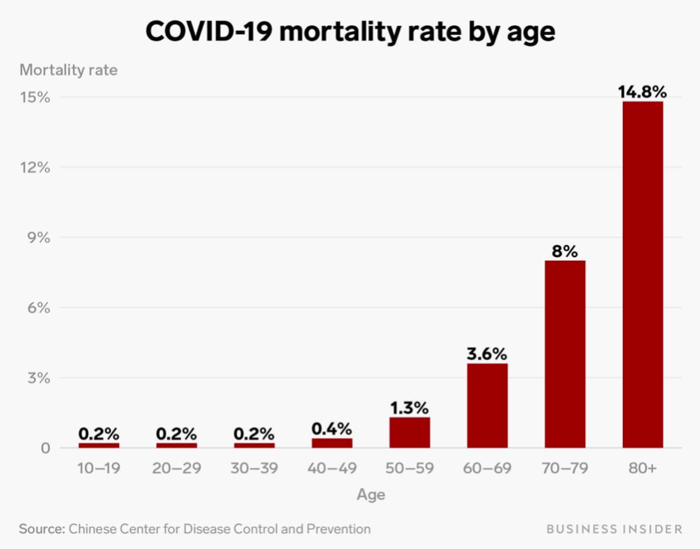
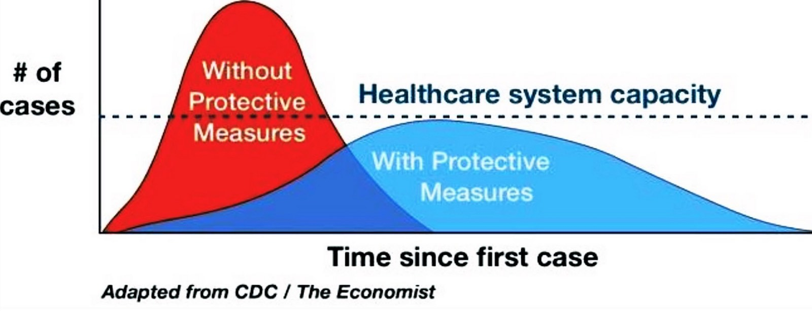

Coronavirus (COVID-19)
Update und Leitfaden
aktualisiert Mar 18, 2020 7:11 PM (UTC)

Du kannst diese Seite über Facebook, Twitter oder die Web-Adresse www.flattenthecurve.com teilen. Bitte beachte, dass sie sich weiterentwickelt. Geschwindigkeit ist entscheidend und ein guter Plan jetzt ist besser als ein perfekter Plan später. Wenn Du beim Übersetzen helfen willst, kontaktiere uns über die Kontaktseite
Update: Wir haben einen Email-Newsletter erstellt, damit Du immer auf dem neuesten Stand bleiben kannst, was COVID19 und die Bemühungen angeht, die Kurve abzuflachen (#FlattenTheCurve). Du kannst hier klicken, um ihn zu abonnieren (Keine Werbung oder geschäftliche Zwecke usw., sondern umsonst!)
** Wenn Du einen Beitrag zur Website leisten oder diese Seite ergänzen oder einen neuen, spezifischen Beitrag schreiben möchtest, dann klicke hier oder erreiche uns hier.**
Hyperlinks zu den Originalquellen werden sowohl zur Zuordnung als auch zur Referenzierung bereitgestellt.
Ja, die Lage ist ernst!
Ruhig bleiben, nicht in Panik verfallen. Aber: auch auf keinen Fall die öffentlichen Warnungen und Empfehlungen einfach vom Tisch wischen! Es zeichnet sich ein Konsens ab, dass eine Eindämmung vor einigen Wochen möglich gewesen sein könnte, aber nicht mehr realistisch ist. Wir haben den Vorsprung, den wir zur Vorbereitung auf die Infektionswelle den China uns gab ungenutzt verstreichen lassen. Wir treten in die Pandemiephase ein, auf die ein saisonales Wiederauftreten der Krankheit folgt bis wir einen Impfstoff haben (der noch 18-24 Monate entfernt sein kann, wenn wir Glück haben)
Nein, CoViD-19 ist nicht mit einer gewöhnlichen Grippe zu vergleichen, nicht mal im günstigsten Fall
Die Weltgesundheitsorganisation(WHO) schätzt die Sterblichkeit auf 3,5% durchschnittlich über alle Altersgruppen. Und es liegen umfangreiche Daten vor, die gegen die These sprechen, dass es eine große Zahl an Fällen gibt, die keine oder nur so wenige Symptome entwickeln. Diese würden nicht in die Statistik einfließen und damit läge die Sterblichkeit deutlich unter 3,5%. Es herrscht Einigkeit darüber, dass besonders ältere Menschen (>60 Jahre) und Vorerkrankte (Diabetes, Krebs, Asthma etc.) gefährdet sind.

Im Anfangsstadium der Epidemie gab es die Hoffnung, dass die 3,5% Sterberate eine viel zu hohe Einschätzung sei. Aber mit zunehmend belastbaren Zahlen schwindet diese Hoffnung schon seit dem 25.2.2020.
Die optimistischste Einschätzung basiert auf dem Verlauf in Südkorea, demnach verliefen 0,7% aller Fälle tödlich. Aber erstens liegt das Durchschnittsalter Südkoreas Bevölkerung deutlich unter dem unseren. Und zweitens hat Südkorea von Anfang des Ausbruchs an alles richtig gemacht, nämlich intensiv auf das Virus getestet (z.B. mittels sog. drive-through-Stationen) und gleichzeitig radikale Informationstransparenz und öffentliche Unterstützung geleistet. Falls sich der Corona-Virus so wie andere Viren verhält, könnten außerdem Maßnahmen helfen, die die Virenlast unter die durchschnittliche Menge an für eine Ansteckung benötigtem Material senken.
Konzentriere dich auf die Hauptsache: #FlacheKurve
Es wurde bisher viel über die tatsächlichen Infektions-, Krankheits- und Sterberaten spekuliert. Aber wir befinden uns noch immer am Anfang der Pandemie und es kann unter Umständen noch Jahre dauern, bis man diesbezüglich gesicherte Zahlen hat. Was wir aber schon jetzt wissen ist, dass die Zahl der tödlichen Verläufe irgendwo zwischen 0,5% und 4% liegen wird. Und dies ist eine mehr als genügend adäquate Begründung für ein entschlossenes, sofortiges und vor allem vorbeugendes Handeln auf großer Ebene. Die mit Abstand wichtigste Sache ist es, die Kurve mit der sich die Epidemie ausbreitet, so flach wie möglich zu halten, damit unsere Gesundheitssysteme nicht überlastet werden und zudem Wissenschaftler und Ärzte mehr Zeit zur Entwicklung eines Impfstoffes und von Behandlungsmöglichkeiten bekommen. 
Die Infektionswelle ist auch bei uns angekommen
Geh davon aus, dass der Virus schon in Deiner Stadt/ an Deinem Arbeitsplatz/ in Deiner Kirche ist. Er ist garantiert bereits “hier”, aber nur noch nicht entdeckt. Schätzungen aus Italien zufolge war die Zahl der Infizierten im frühen Stadium der Epidemie viermal so hoch wie die Zahl, die man zu der Zeit bestätigen konnte. Die Universitäten von Stanford und Washington haben all ihren persönlichen Unterricht auf Telekommunikation umgestellt. Diesem Vorbild sollten andere Bildungseinrichtungen folgen. Allerdings geht das nicht einfach so, Lehrkräfte brauchen dafür Technologie und Unterstützung. Manche Schulen und Hochschulen sind noch nicht entsprechend ausgestattet oder ihnen fehlt schlicht das Geld. Wir sollten also gerade bei denen, für die so ein Wechsel kein allzu großes Problem darstellt, anfangen. Es gibt zwar nicht die eine Lösung, die für alle funktioniert, aber Geschwindigkeit ist essenziell. Lehrkräfte, wartet nicht, bis eure Administration es insgesamt anordnet. Triff selbst die Entscheidung, so schnell wie möglich. Hier findest Du ein paar Tipps (englisch), wie Du einfacher online unterrichten kannst.
Das Gesundheitssystem
Das deutsche Gesundheitssystem
In Deutschland ist das Gesundheitssystem von den Kapazitäten her gut aufgestellt. Nicht jedoch, was das Personal anbelangt https://www.aerzteblatt.de/nachrichten/111029/Ueberlastung-deutscher-Krankenhaeuser-durch-COVID-19-laut-Experten-unwahrscheinlich. Dennoch stößt das Gesundheitssystem in einigen Bundesländern bereits an seine Grenzen. https://www.swr.de/swraktuell/baden-wuerttemberg/corona-krankenhaeuser-100.html Deswegen ist es umso wichtiger, die Kurve flach zu halten!
Beschreibung der amerikanischen Gesundheitspolitik
Momentan ist die Beschreibung der amerikanischen Gesundheitspolitik nur auf Englisch verfügbar.
Es gibt Hoffnung.
Es gibt Hoffnung. Du bist es. Das ist die Aufgabe
Du kannst helfen, indem Du die folgenden Anweisungen so weit wie möglich befolgst. Je früher die Vorsichtsmaßnahmen getroffen werden, desto mehr Vorsichtsmaßnahmen werden getroffen, desto mehr Leben werden gerettet. So einfach ist das. Erwarte, dass die gestrigen Spätzünder die heutigen Ersthelfer sind. Widerstehe dem Drang die Hoffnung aufzugeben. Der Schlüssel ist, ruhig zu bleiben und die stetige Arbeit der Infektionskontrolle zu erledigen und andere zu drängen, diesem Beispiel zu folgen.
Von einem lieben Freund in Peking hörte ich das Zitat „Lenke Dich ab von der Angst und Hysterie, die Eure Städte treffen könnte. Verwende Weisheit, aber lasse Sie nicht zu, dass sie zu einer leeren Entschuldigung dafür wird, Ihre Mitmenschen nicht zu lieben. Wähle Großzügigkeit, anstatt zu horten. Und an diesen wirklich harten Tagen (oder vielleicht nachdem Du zu viele Nachrichten gesehen hast) drehe die Musik auf und tanze! Feiere das Gute! Es ist da, es wird bleiben und Du könntest ein Katalysator dafür sein!“
Hier ist wie.
Über die Autoren
Mehr über die Autoren hier
Zugehörigkeiten
Bitte beachte, dass ich nicht im Namen einer Institution spreche. Ich wende nur das an, was ich weiß, und höre auf die Beweise, sobald sie auftauchen. Es ist nicht perfekt. Bitte lass mich wissen, wenn es Probleme mit der Richtigkeit oder Aktualität dieser Zusammenfassung gibt; falls Du ein Virologe, Angehöriger der Gesundheitsberufe usw. bist und hierzu beitragen möchten, besuche bitte die Kontaktseite, um Dich mit uns in Verbindung zu setzen.
Vielen Dank an Moni Munoz Torres für die Bearbeitung der Texte und für die Übersetzung ins Spanische (in Arbeit). Ich arbeite morgen, 9. März 2020, an einer Übersetzung ins Italienische.
Betrachte diesen Inhalt als gemeinfrei CC-0 lizenziert, soweit der Inhalt hier original ist. Die Lizenz deckt die Quellen nicht ab, auf die hier verwiesen wird (da sie es nicht kann). Verwechsle diese Anleitung nicht mit Pseudowissenschaft.
Wem Du folgen kannst, wenn Du Dich mehr für den Wissenschaftlichen Hintergrund interessierst
Die wahren Helden sind jene an der Front und die, deren Arbeit oben zitiert wird. Hier sind einige, denen ich aus verschiedenen Gründen folge. Mein Zitieren bedeutet nicht, dass sie diese Anleitung vollständig gelesen oder gebilligt haben. Hier ist eine unvollständige Liste ihrer Twitter-Profile. Ich folge zudem vielen anderen Leuten (ohne Bezug zum Ausbruch), die Du hier sehen kannst: https://twitter.com/figgyjam/following.
Wie Du helfen kannst
Überhaupt erst einmal vielen Dank! Es wird eine Menge unbezahlte Arbeit in diese Seite gesteckt, um sie zu einer der besten und hilfreichsten Ressourcen in der ungewissen Zeit von COVID19 zu machen. Es fallen aber trotzdem Kosten an, zum Beispiel, um die Seite zu betreiben oder vielleicht später jemanden anzustellen, der die Seite verwaltet.
Wenn Du uns finanziell unterstützen möchtest, sind wir sehr dankbar über jede einzelne Spende, die Du uns hier zukommen lassen kannst.
Wenn Du Inhalte, Rezensionen und Übersetzungen beitragen willst, kannst Du das hier
Fühl Dich aber auf keinen Fall verpflichtet, zu spenden – diese Seite ist völlig kostenlos.
Du kannst Dir aber sicher sein, dass alle Spenden direkt wieder zurück in die Seite fließen werden.
Nochmal Danke! Und wasch Deine Hände.